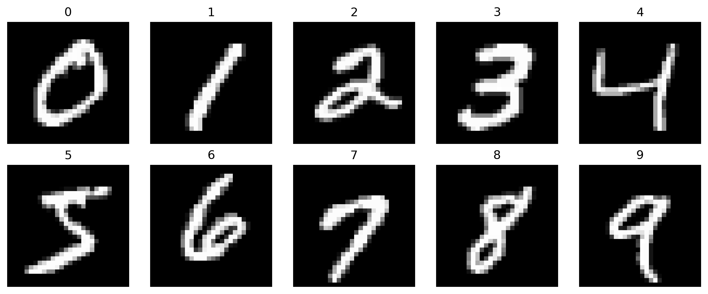
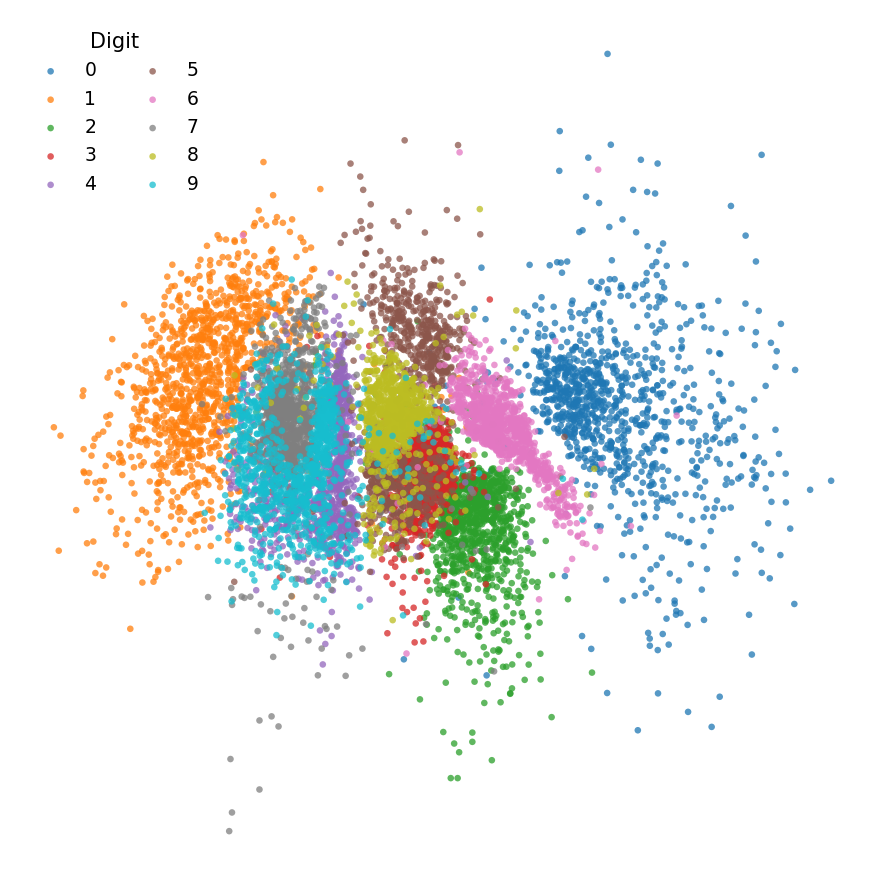
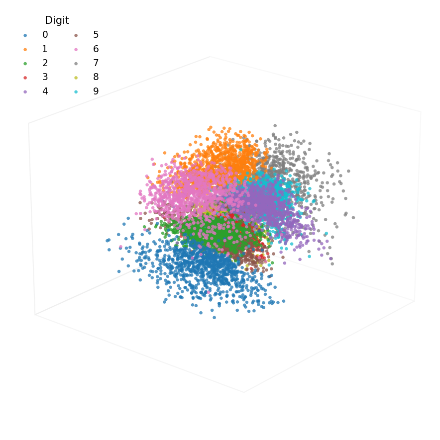
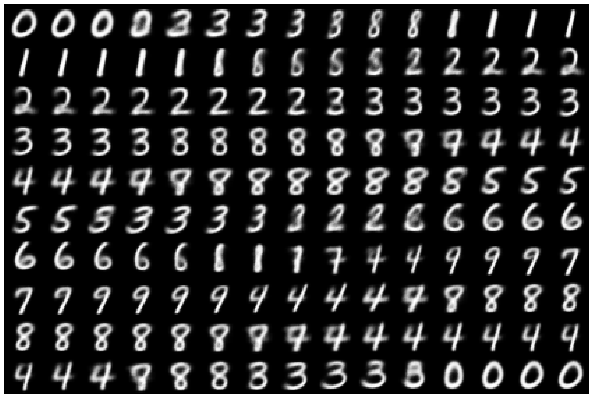

Machine-learning guide
Variational autoencoders
The thesis appendix retains the evidence lower bound, Gaussian latent distribution and reparameterisation equations. This page contains the extended generation and latent-space demonstrations.
From a point to a distribution
A deterministic autoencoder maps an observation to one embedding. A variational autoencoder maps the observation to the parameters of a probability distribution. A latent sample is drawn through the reparameterisation step and supplied to the decoder.
Data generation
After training, a latent vector can be sampled from the prior and passed through the decoder. The generated output follows the structure learned from the training observations. The MNIST digits below provide a simple visual example; generation was not used in the environmental regionalisation.

Two-dimensional latent representation
A two-dimensional bottleneck allows every embedding to be drawn directly. Digit classes occupy overlapping but distinguishable parts of the latent space, while gradual changes between nearby embeddings illustrate the continuous organisation encouraged by the variational objective.

Three-dimensional latent representation
Adding a third latent dimension gives the decoder more capacity to organise the observations. The resulting representation cannot be inspected in one flat view without projection, but the class structure remains visible in the three-dimensional plot.

Interpolation between latent regions
Linear interpolation places equally spaced points between two latent positions and decodes each point. The sequence below moves between consecutive digit-class centres. Intermediate outputs show how the decoder changes gradually along the selected latent path.
